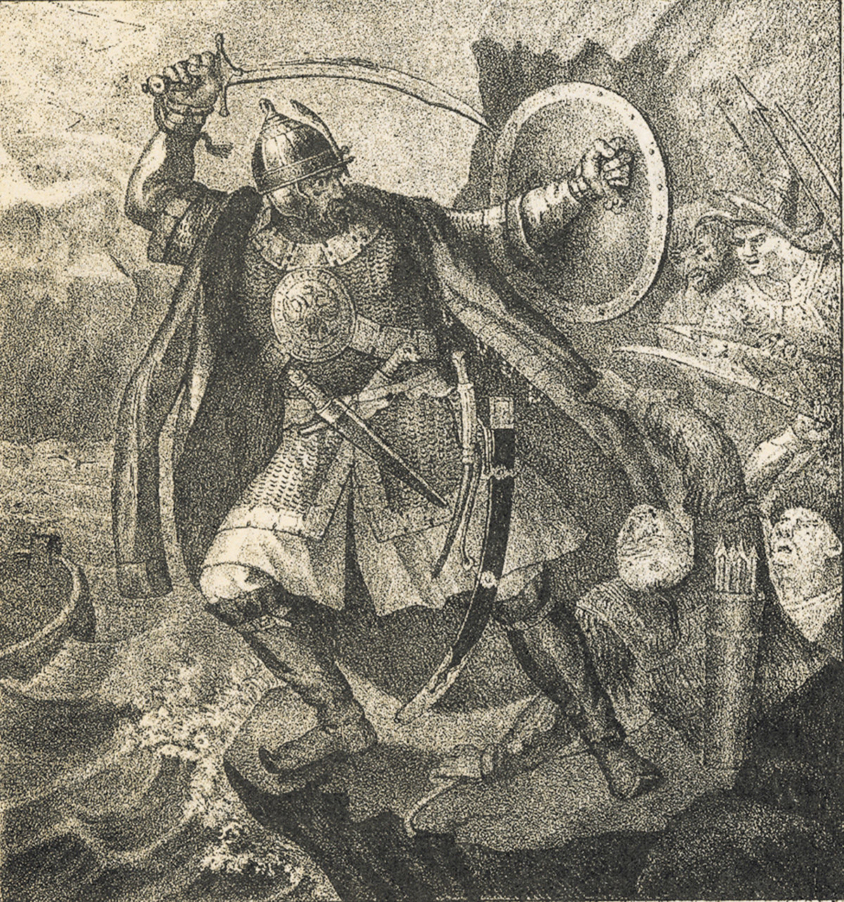

Известный землепроходец, завоеватель и казацкий атаман, биография которого до сих пор содержит немало тайн для историков. В России Ермака Тимофеевича почитают точно так же, как былинных богатырей. Он выдающаяся личность, которая не только оставила заметный след в истории государства, но и символизирует ее славное героическое прошлое. Благодаря именно его заслугам, в составе России появились земли, принадлежащие ранее Сибирскому ханству.
Трудно сказать, кому именно принадлежала идея похода. Одни летописи говорят, что Строгановы послали казаков покорять Сибирское царство. Другие — что казаки с Ермаком во главе самостоятельно предприняли этот поход. Возможно, почин был обоюдным. Строгановы снабдили казаков провиантом, а также ружьями и порохом, дали им ещё 300 человек из собственных ратных людей, в числе которых, кроме русских, находились наёмные литовцы, немцы и татары. Казаков было 540. Следовательно, всего в отряд вошли более 800 человек. Готовились к походу казаки довольно-таки долго, сибирская «Одиссея» началась в сентябре 1581 года.
Маршрут начинается в Тобольске, проходит через городище Искер (Тобольский район), село Абалак Тобольского района, село Сузгун Тобольского района, село Вагай. Далее есть возможность выезда на трассу Тюмень – Омск (п. Голышманово)
Первые битвы между ханством и казаками состоялись весной 1582 года: в марте состоялось сражение на территории современной Свердловской области. Возле города Туринск казаки полностью разбили местные войска хана Кучума, а в мае уже заняли крупный город Чинги-туру. В конце сентября началось сражение за столицу Сибирского ханства Кашлык. Через месяц победу вновь одержали казаки. Однако после изнурительного похода Ермак решил сделать паузу и отправил посольство к Ивану Грозному, тем самым взяв паузу в присоединении Западной Сибири к русскому царству. Когда Иван Грозный узнал о первых стычках между казаками и Сибирским ханством, царь приказал отозвать «воров», имея в виду казацкие отряды, которые «самовольно напали на соседей». Однако в конце 1582 года к царю прибыл посланник Ермака — Иван Кольцо, который сообщил Грозному об успехах, а также попросил подкрепления для полного разгрома Сибирского
В 1582–1585 годах отряд казаков под командованием Ермака совершил военный поход по рекам Урала и Сибири. Казаки высадились на берегу Иртыша и в 15 км от Тобольска. В трeхдневном сражении (23–25 октября 1582 г.) на Иртыше под Чувашским городком Потчеваш дружина Ермака наголову разбила войско сибирского хана Кучума, заняв его столицу город Кашлык. Войска хана откочевали в степи. На сторону Ермака перешли некоторые местные племена, а также часть татарских феодалов. Еще три года экспедиция Ермака устанавливала русскую московскую власть в обском левобережье Сибири. В дождливую ночь на 6 августа 1585 г. хан Кучум неожиданно напал на стан казаков и перебил около 20 человек, погиб и Ермак. Это была единственная и последняя победа хана. Легендарный поход Ермака в Сибирь имел огромное значение для истории России: разгром царства Кучума открыл путь для переселения русских людей за Уральские горы.
Смерть Ермака окутана тайнами. Согласно основной версии, 6 августа 1585 года казачий отряд вместе со своим легендарным лидером пристал к островку, расположенному на Иртыше. Дружина, чувствовавшая себя в безопасности, решила лечь спать. Кучум, затаившийся в засаде с татарскими воинами, атаковал лагерь. Прокравшись на остров, татары принялись сражаться с сонным войском казаков. Проснувшись, Ермак бросился в реку, желая спастись от кучумовских солдат. Но тяжёлая стальная броня утащила Ермака на дно реки. В ту же ночь погибли все казаки из отряда атамана.
Смерть Ермака не помешала Русскому государству сохранить власть на территории, расположенной за Уралом. Уже через год после гибели казачьего атамана, в 1586-м, был основан первый русский город в Сибири, получивший название Тюмень. А ещё через год русские возвели Тобольск. К концу 16-го столетия завоевание Сибирского ханства было завершено.